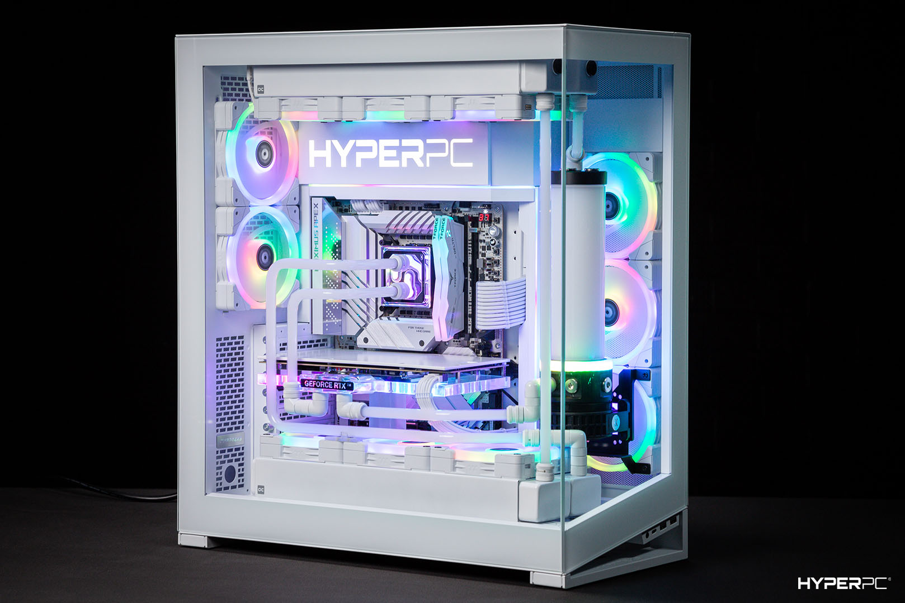
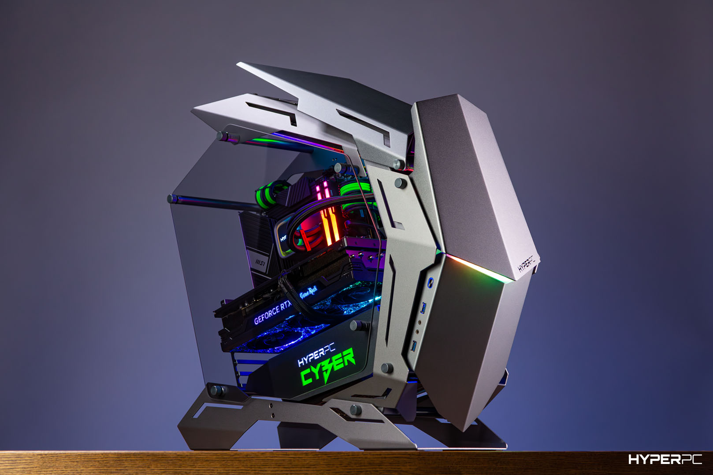

HYPERPC POSEIDON CONCEPT
|  | Видеокарта: ASUS GeForce RTX 4090 ROG Strix [24GB, 16384 CUDA] Процессор: Intel® Core™ i9-14900K(F) [до 6.0GHz, 24 ядра] Материнская плата: MSI MPG Z790 EDGE [DDR5, Wi-Fi] Охлаждение: Castomnoe Оперативная память: 64GB Kingston Fury Beast RGB [DDR5, 5600MHz, 2x32GB] SSD накопитель: 2 x 2TB Samsung 990 PRO [7450MB/s, Gen4] Блок питания: 1000W Deepcool PX1000G [80+ Gold] Корпус: PHANTEKS NV7 White Операционная система: Microsoft Windows 11 Pro OEM |
Эксклюзивная игровая станция, подходящая для профессиональных геймеров.
Кастомное водяное охлаждение обеспечивает стабильность. Основана на MSI GeForce RTX 4090 SUPRIM [24GB, 16384 CUDA] и Intel® Core™ i9-14900K(F) [до 6.0GHz, 24 ядра].
HYPERPC CYBER
|  | Видеокарта: MSI GeForce RTX 4070 Ti GAMING X SLIM [12GB, 7680 CUDA] Процессор: Intel® Core™ i5-14600K(F) [до 5.3GHz, 14 ядер] Материнская плата: MSI PRO Z790-A MAX [DDR5, Wi-Fi] Охлаждение: HYPERPC WaterCooling 360 RGB Оперативная память: 32GB Kingston Fury Beast RGB [DDR5, 6000MHz, 2x16GB] SSD накопитель: 2TB Samsung 970 EVO Plus [3500MB/s, Gen3] Блок питания: 850W Deepcool PX850G [80+ Gold] Корпус: HYPERPC CYBER Black Термоинтерфейс: Нанесение термопасты Arctic MX-4 Вентиляторы: Thermalright TL-B12(R)-S |
Стильный и производительный игровой компьютер с видеокартой MSI GeForce RTX 4070 Ti GAMING X SLIM [12GB, 7680 CUDA] и процессором Intel® Core™ i5-14600K(F) [до 5.3GHz, 14 ядер].